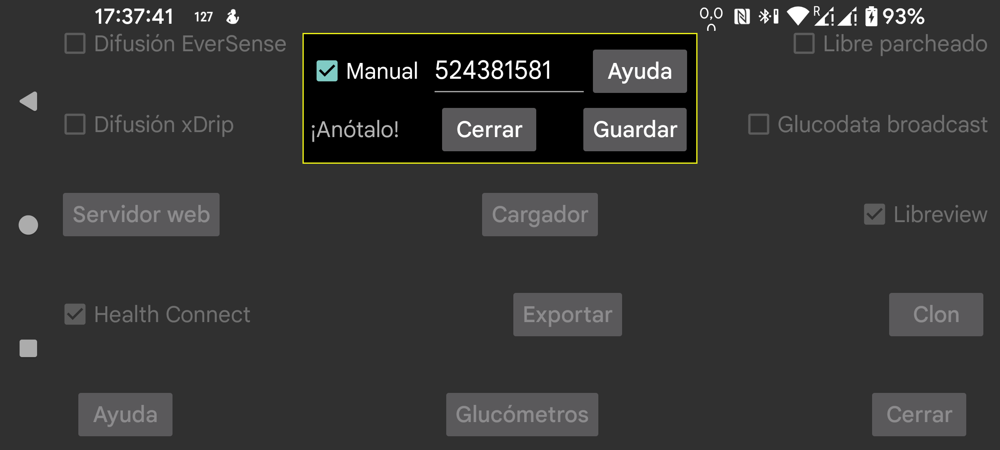

ar be de es fr nl pl ru tr uk uz zh en
¿Cómo se obtiene el ID de cuenta de Libreview necesario para escanear por NFC un sensor FreeStyle Libre 3? Si activas Manual, puedes introducir el ID de cuenta a mano. También puedes desactivar Manual y pulsar Desde Libreview para usar el correo electrónico y la contraseña de tu cuenta y recuperarlo desde Libreview.
También es posible obtener primero el ID de cuenta desde Libreview y después activar Manual y cambiar el correo y la contraseña de la cuenta de Libreview. Si luego activas Enviar a Libreview y pulsas Reenviar datos, los datos se enviarán a esa otra cuenta de Libreview, pero seguirá usándose el ID de cuenta anterior para escanear el sensor por NFC. De esta forma, Juggluco puede enviar datos a una cuenta de Libreview distinta de la que usa la app Libre 3 de Abbott.